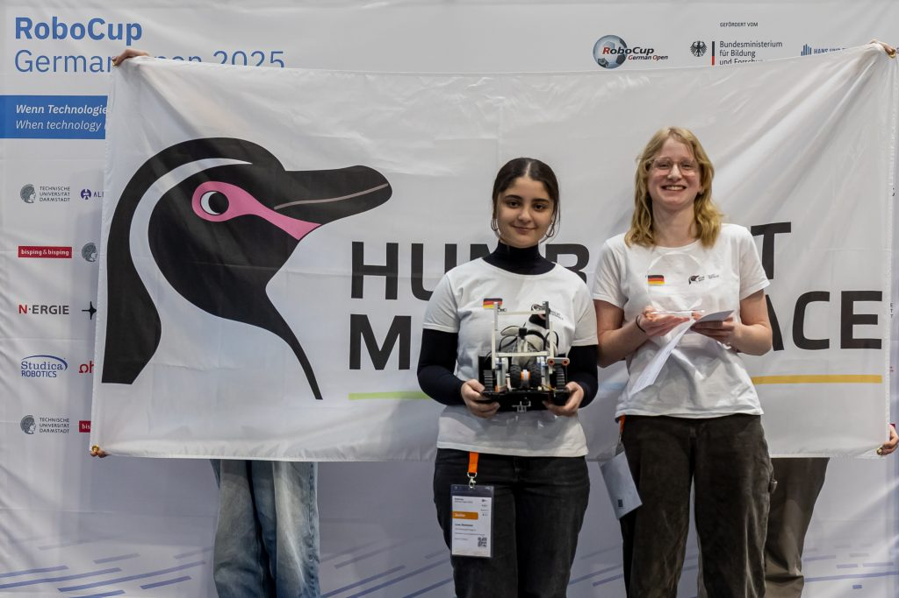
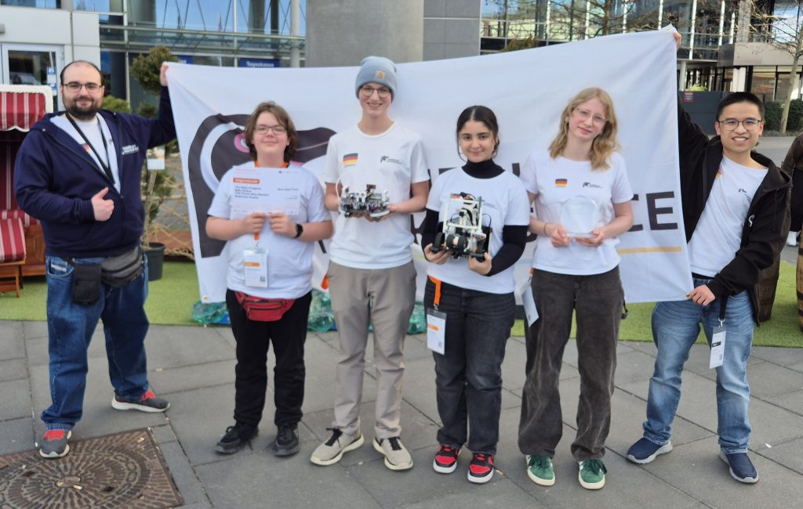
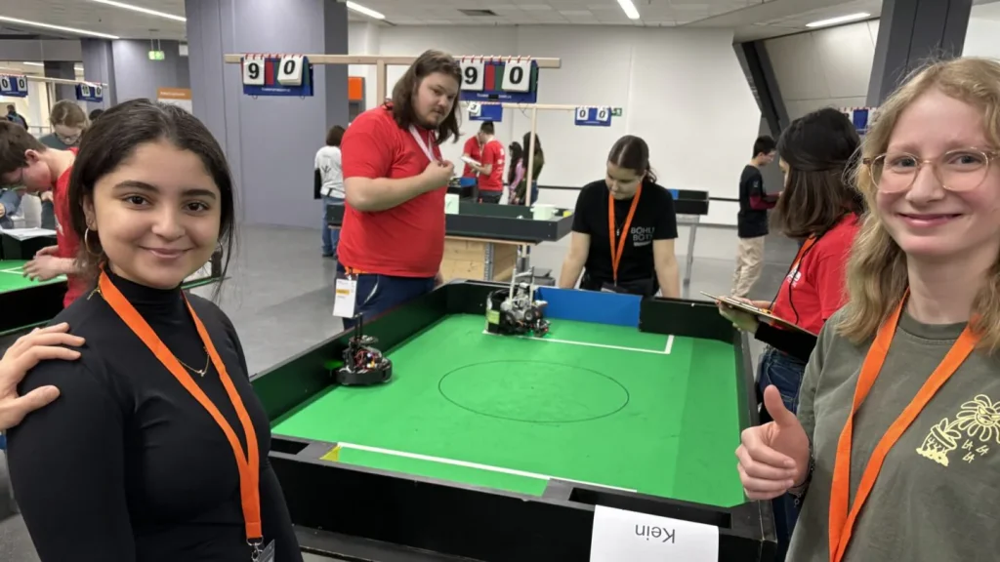
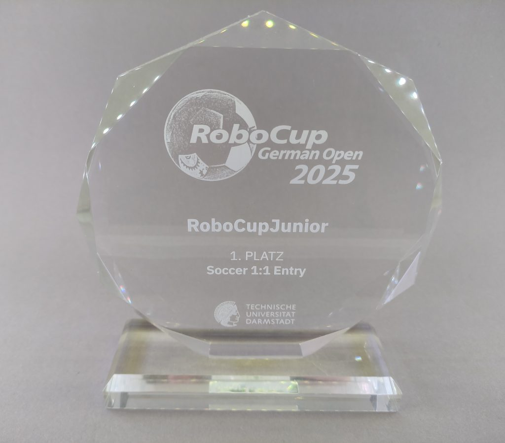

Einleitung
Vom 13. März bis zum 16. März fand in Nürnberg die RoboCupJunior German Open statt. Als Team nennen wir uns „The PowerPuff Penguins“ und haben in der Liga Soccer „1vs1 Entry“ teilgenommen. Wir traten die Reise zur Deutschen Meisterschaft mit den zwei privaten Autos unserer Mentoren an. Die Fahrt dauerte ca. 5 Stunden. Wir kamen um circa 12:30 Uhr direkt an der Messehalle an – früher als geplant. Wegen der voraussichtlichen Witterung in Bayern traten wir die Reise früher an, erfreulicherweise gab es keine negativen Wettereinflüsse auf die Fahrt. Da der erste Tag zur Vorbereitung diente, haben wir erst einmal alles Organisatorische geklärt und unseren Roboter gecheckt, damit wir am nächsten Tag auch sicher in die Wettbewerbe starten konnten.
Bei der Deutschen Meisterschaft startete unser Team erfolgreich in das Turnier und gewann alle Einzelspiele. Nach einem deutlichen Auftaktsieg folgten weitere spannende Begegnungen, darunter ein knappes Comeback nach technischen Problemen und ein wichtiger Erfolg gegen die bis dahin führende Mannschaft. Während des Wettbewerbs traten zeitweise Schwierigkeiten mit dem Roboter auf, die sich schließlich auf elektromagnetische Störungen durch Starkstromkabel unter dem Spielfeld zurückführen ließen. Trotz dieser Herausforderungen konnte sich unser Team kontinuierlich verbessern und die Tabellenführung übernehmen.

Siegerehrung

Teamfoto
Neben den Einzelspielen fanden mehrere Super-Team-Matches statt, die wir ebenfalls alle gewinnen konnten. Dadurch sicherten wir uns nicht nur den ersten Platz in dieser Wertung, sondern auch den Deutschen Meistertitel insgesamt. Mit einem souveränen Sieg im letzten Spiel machten wir den Turniersieg perfekt und qualifizierten uns für die Europameisterschaft in Italien. Besonders stolz sind wir auf die starke Teamleistung und die Unterstützung unserer Mentoren Duc und Steven, die uns mit ihrem Engagement und ihrer Vorbereitung maßgeblich zu diesem Erfolg verholfen haben.
Ein Bericht über den RoboCupJunior 2025 (deutsche Meisterschaft) von Emily und Luna
Eindrücke
Aus dem Alltag des Makerspaces

Teambild in der Messe

📷Aufnahme aus dem Spiel

Pokal der GermanOpen